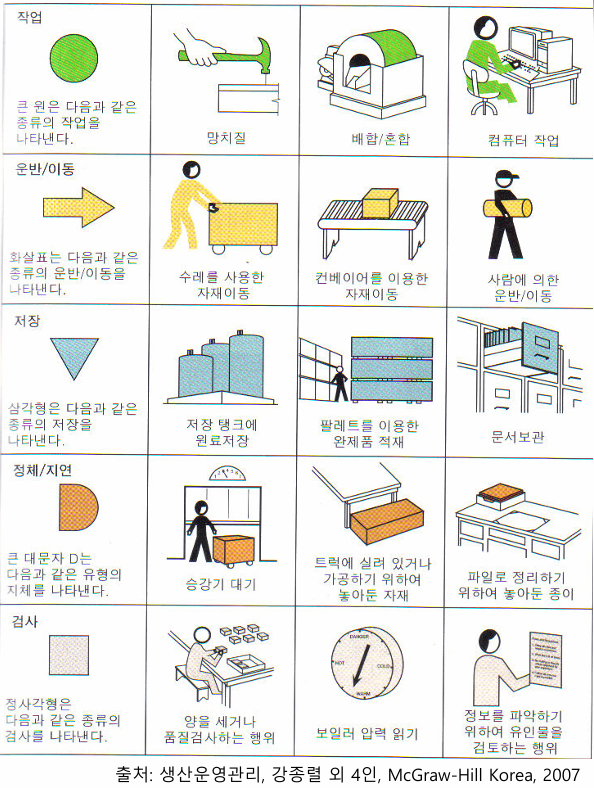
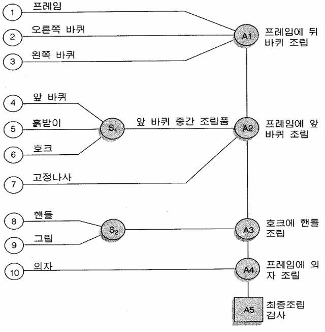
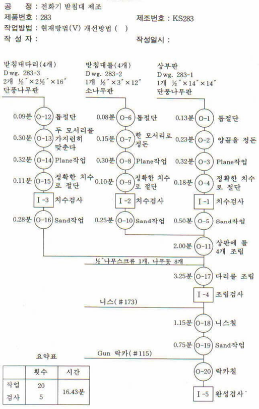
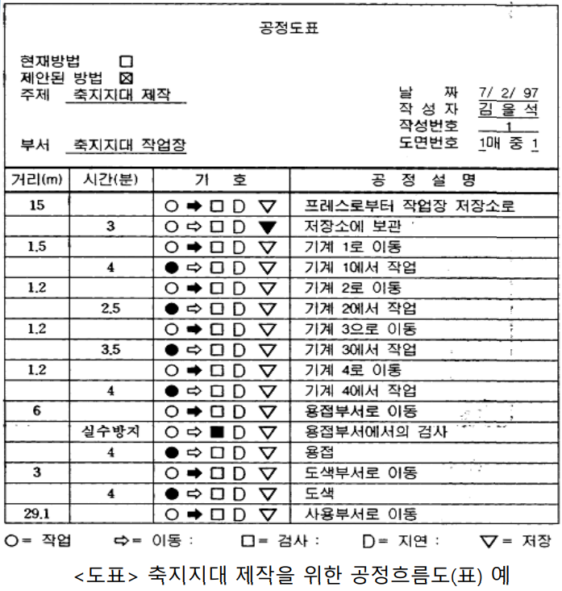

공정개선
Keywords
공정분석, 공정개선, 조립도표, 작업공정도표, 흐름공정도표
공정개선
공정개선(Process Improvement)이란, 제품 또는 서비스가 생산되는 전 과정에서의 낭비 요소를 제거하고 효율성과 품질을 향상시키는 활동을 말한다. 공정개선은 다음의 목표를 중심으로 수행된다.
- 품질 향상
- 원가 절감
- 리드타임 단축
- 유연성 확보
- 고객 만족 증대
공정개선의 필요성
공정개선 필요성은 다음과 같다.
| 구분 | 설명 |
|---|---|
| 품질문제 | 불량률 증가, 재작업/폐기 발생 |
| 효율성 저하 | 병목공정, 비효율 동선, 낭비 존재 |
| 시장 변화 대응 | 다품종 소량, 납기 단축 요구 증가 |
| 작업자 편차 | 표준화 미비로 작업자 간 품질 차이 |
| 설비 노후화 | 설비 불균형, 유지보수 비용 증가 |
공정개선 접근 방법
공정개선은 시스템적으로 접근하는 방법과 실무적으로 접근하는 방법이 있다.
시스템적 접근
공정개선은 6시그마, 린 생산, TPM 등 시스템적으로 접근할 수 있다.
| 접근법 | 주요 특징 |
|---|---|
| 6시그마 | 품질 중심, 통계기법 활용 (DMAIC 사이클) |
| 린 생산 | 낭비 제거 중심, JIT, 표준작업 등 적용 |
| TPM | 설비 중심 개선, 자주보전과 예방보전 |
| IE(Industrial Engineering) | 동작연구, 시간연구, 작업분석 기법 활용 |
| 스파게티 다이어그램 | 공정 동선 시각화 및 비효율 제거 |
실무적 개선 도구
공정개선은 일부 도구를 이용하여 실무적으로 개선을 수행할 수 있다.
| 도구 | 활용 목적 |
|---|---|
| Flowchart | 공정 흐름 시각화 및 문제 구간 식별 |
| P-Q 분석 | 생산량(P)과 품목수(Q)에 따른 생산 방식 검토 |
| Pareto 분석 | 불량, 낭비 등 개선 우선순위 결정 |
| Fishbone Diagram | 문제의 원인요소 체계적 도출 |
| 5Why 분석 | 근본 원인 추적을 통한 개선 방향 수립 |
| VSM (Value Stream Mapping) | 흐름상의 부가가치 vs 낭비 시각화 |
공정개선 단계
공정개선은 DMAIC, PDCA 등과 같은 기법을 적용할 수 있다.
DMAIC
단계 주요 활동 D (Define) 개선대상 선정, 프로젝트 정의 M (Measure) 현재 성능 측정, 기준 정립 A (Analyze) 문제의 원인 분석 (통계, 5Why 등) I (Improve) 개선안 도출 및 실행 C (Control) 성과 모니터링, 표준화 및 정착화 PDCA
단계 의미 주요 활동 P (Plan) 계획 문제 인식, 원인 분석, 개선 목표 및 방안 수립 D (Do) 실행 계획한 개선안의 파일럿 실행 또는 실제 적용 C (Check) 점검 개선 결과에 대한 평가 및 성과 분석 A (Act) 조치 표준화 또는 미흡 시 재계획 수립
공정개선의 7대 낭비 항목
TPS에 언급한 공정개선을 위한 7대 낭비는 다음과 같다.
| 낭비 항목 | 설명 |
|---|---|
| 과잉생산 | 수요보다 많이 생산 |
| 재고 | 불필요한 자재, 반제품, 완제품 |
| 가공 | 불필요하거나 과도한 공정 |
| 운반 | 자재나 제품의 불필요한 이동 |
| 동작 | 불필요한 작업자 움직임 |
| 대기 | 작업자, 자재, 설비의 대기 시간 |
| 불량 | 재작업, 폐기 등 품질 미흡 |
공정개선과 연계되는 주요 시스템으로는 MES, ERP, QMS, EHS 등이 있다.
| 시스템 | 관련성 |
|---|---|
| MES | 생산 공정 실시간 모니터링 및 분석 |
| ERP | 자재 흐름, 생산계획, 공정통제 연계 |
| QMS | 품질 기준 및 이탈 원인 분석 |
| EHS | 안전·보건 관점 개선 요소 도출 |
공정분석 및 개선을 위한 도표
공정분석 및 개선을 위한 대표적인 도표는 다음과 같다. 참고로 조립도, 공정흐름도, 작업공정도 등에 사용되는 기호와 의미는 다음과 같다.

조립도표(Assembly Chart)
- 제품 결합방법, 즉 조립순서 및 제품 전반적인 구조 등을 나타내 주는 도표
- 작업을 나타내는
○기호와 검사를 나타내는□기호를 이용하여 조립순서에 따라 선으로 연결 (왼쪽에서 오른쪽, 위에서 아래) - 제품 생산을 위한 전반적인 조립 흐름을 쉽게 파악

작업공정도표(Operation Process Chart)
- 원자재가 들어오는 곳으로 부터 완제품이 나오는 곳까지 수행되는 작업과 검사 및 이들 작업순서를 나타내 주는 도표
- 사용되는 기호는 조립도표에서와 같고 다만 각 활동 내용과 소요시간이 활동 양 옆에 명시되고 작업 및 검사 일련 번호가 부여됨

흐름공정도표(Flow Process Chart)
- 작업, 운반, 검사, 지연 및 저장 등 다섯 가지 표준공정분석 기호를 이용하여 작업대상물 흐름이나 움직임을 상세하게 나타낸 도표
- 비생산적 활동(검사, 운반, 지연, 저장) 파악이 용이하고 공정 효율성 분석, 개선 제안 가능

http://business.chosun.ac.kr
경로도(Flow Diagram)
- 공정분석 대상이 되는 부분품, 재료, 제품 이동경로를 작업장 배치도상에 기입한 도표
조립도, 흐름공정도, 작업공정도를 상호 비교하면 다음과 같다.
| 구분 | 조립도 | 흐름공정도 | 작업공정도 |
|---|---|---|---|
| 목적 | 조립 순서 및 구조 파악 | 흐름상의 문제 파악 및 개선 | 작업 및 검사 흐름 개요 파악 |
| 표시 범위 | 제품 전체 구성요소 | 작업, 검사, 이동, 지연, 저장 포함 | 작업(Operation)과 검사 중심 |
| 형태 | 트리 구조 | 순차적 흐름도 | 선형 순서도로 간단히 구성 |
| 사용 기호 | 주로 없음(트리만 사용) | 표준 기호 (○, □, →, D, △ 등) | ○(작업), □(검사) 중심 |
| 활용 예시 | 제품 조립 구조 설명서 | 생산라인의 공정 흐름 분석 | 작업표준서, 초보자 공정 이해용 |
참고자료
_EOD_